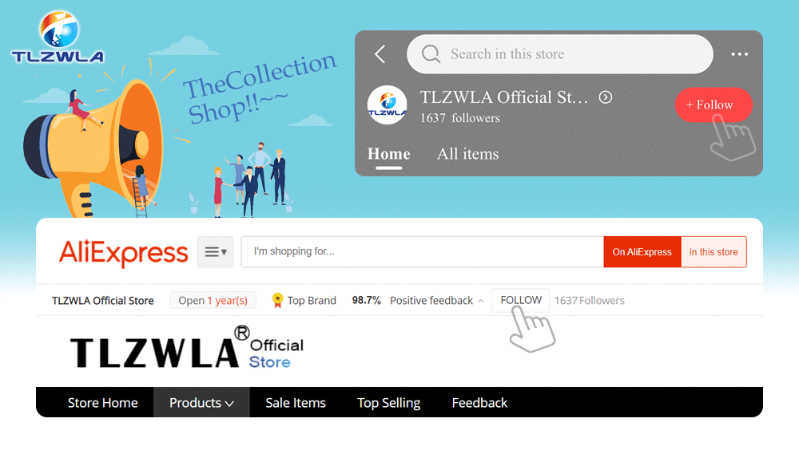
12V MINI SMALL MEDIUM Size Car Fuse Holder Add-a-circuit TAP Adapter with 10A Micro Mini Standard ATM Blade Fuse
- With the ever increasing amount of vehicles manufactured with the CAN BUS wiring system it is becoming increasingly difficult to locate a quick power source without cutting,splicing and soldering.
- This little component overcomes this issue and has the added advantage of a built in fuse holder.
- Therefore is ideal for installing additional accessories,such as phone kits, alarms, central locking kits, games consoles, hard wired sat nav's, accessory sockets, auxiliary lights, driving recorders, trackers etc.
Feature:
1.Allows easy installation of additional circuits without cutting, splicing or soldering.
2.Turns one fuse slot into two therefore providing individual protection for each circuit.
3.Easy installation.
Installation is easy:
1.Simply remove an existing fuse from the fuse box, insert that fuse in to the bottom slot of the fuse tap.
2.Insert a suitable fuse for the new accessory in to the top slot.
3.Crimp your new live wire to the blue butt terminal on the fuse tap.
4.Insert the fuse tap into the fuse box slot where the fuse originally was.
Fuse Holders & Boxes Long: 17.6cm
Package includes:
Blue terminal :(no bullet delivery terminal)
Transparent terminal (with bullet delivery terminal by default)
Select No Fuse and do not send a Fuse
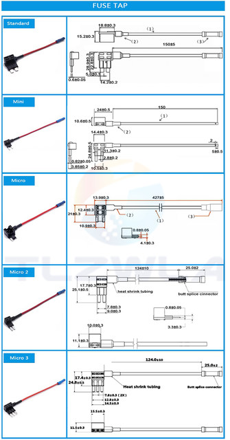
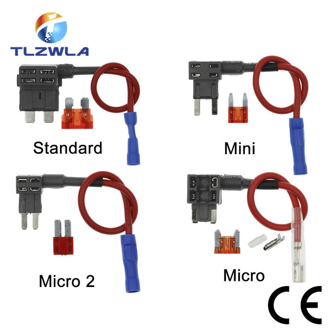
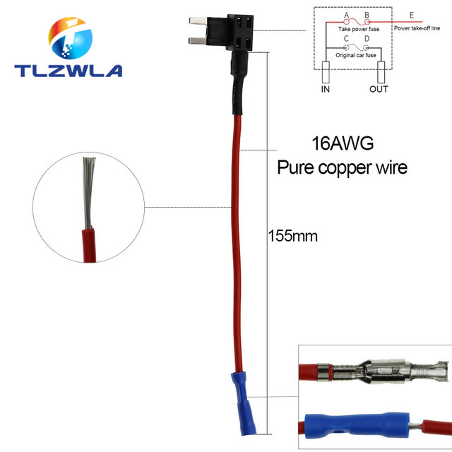
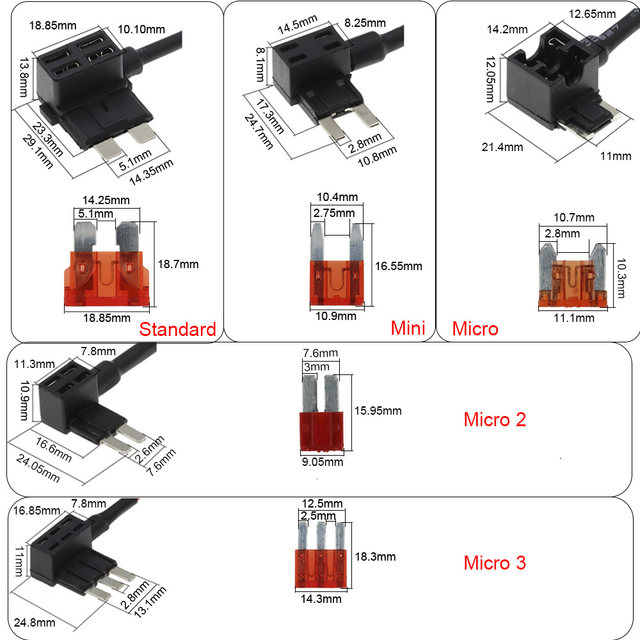
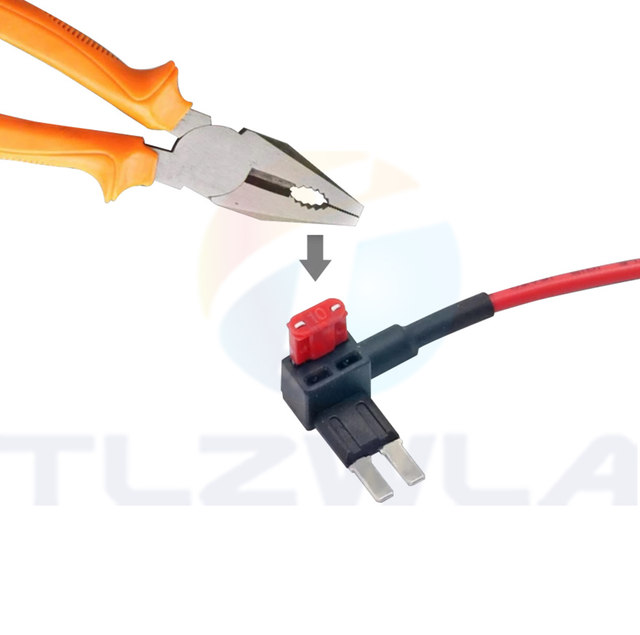
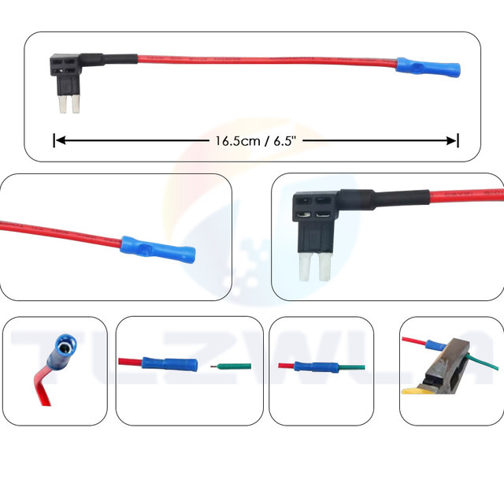
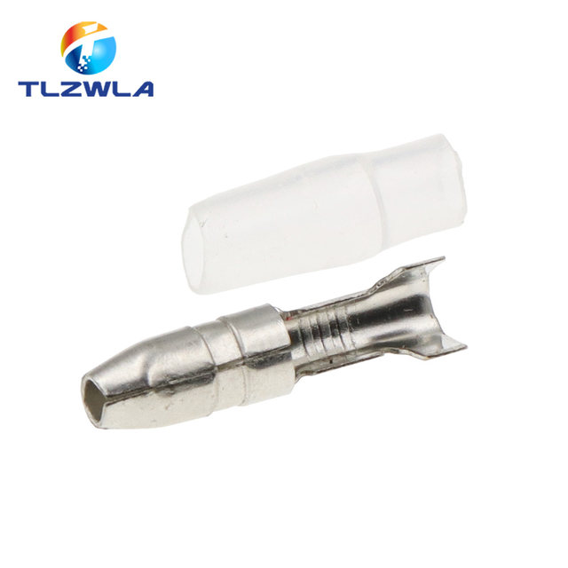
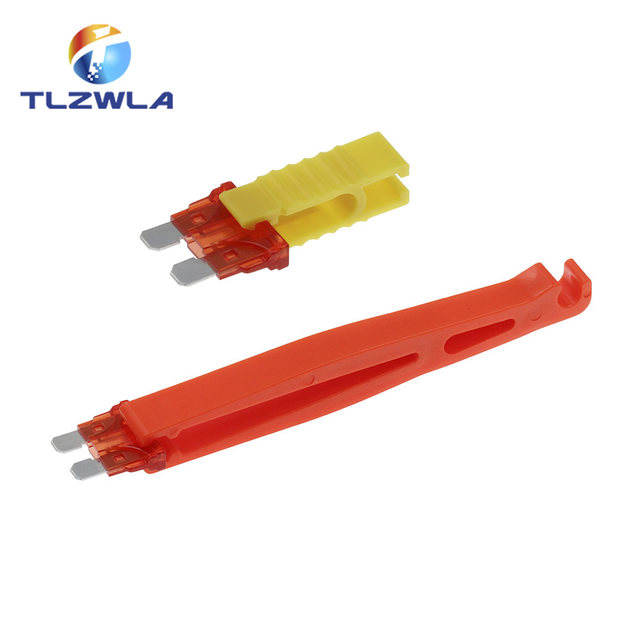
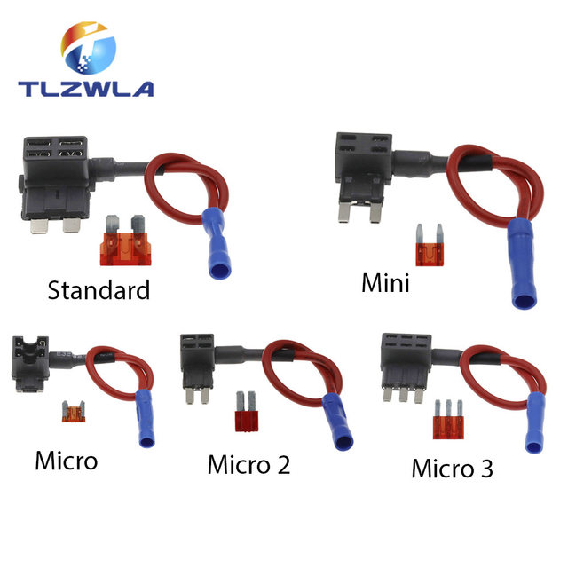
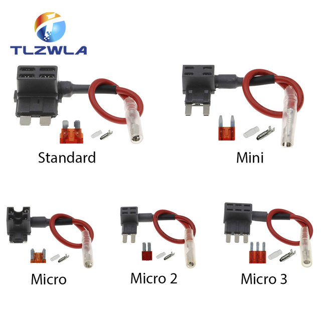